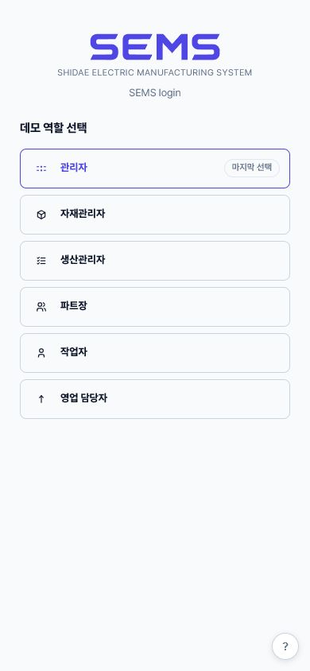
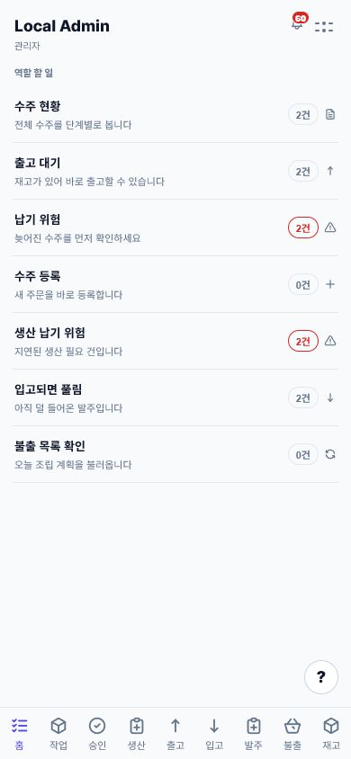
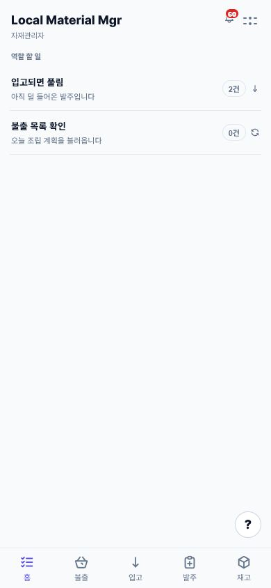
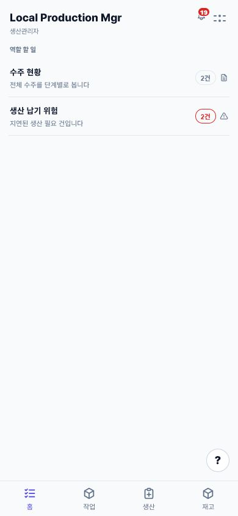
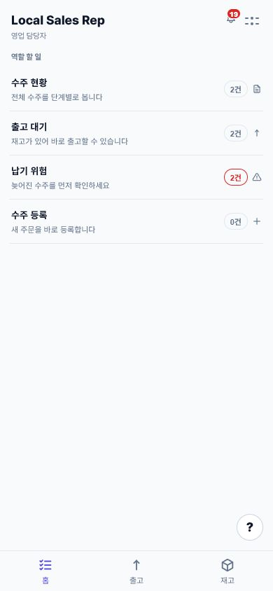
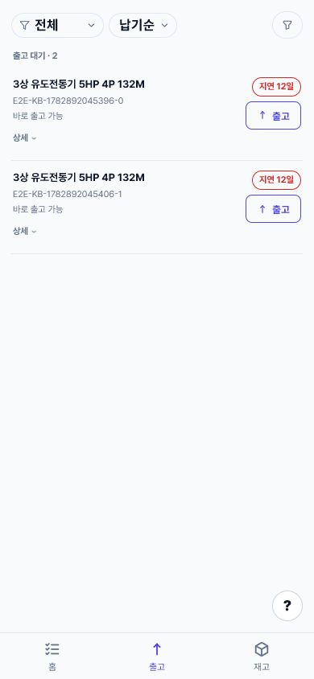
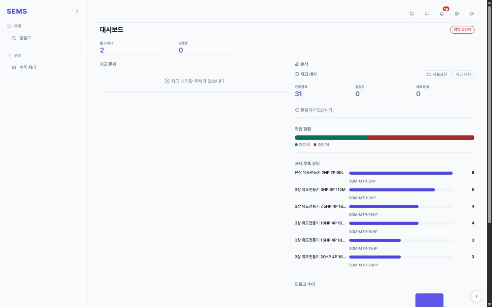
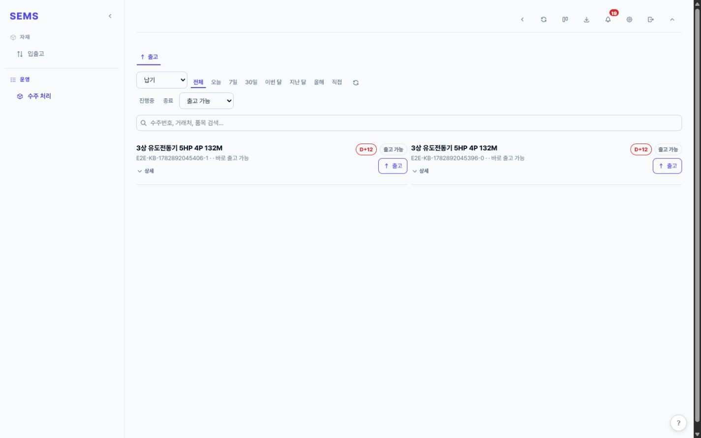

역할별 진입점
관리자·자재·생산·파트장·작업자·영업이 각자 다른 작업대로 들어갑니다.
mobile-first · role workflow · fastify/typescript · mysql
엑셀과 대화방에 흩어져 있던 수주, BOM, 자재, 생산, 승인과 출고 업무를 SEMS에서 처리하도록 만들었습니다. 역할마다 오늘 처리할 업무만 먼저 보이게 했고, 현장에서는 휴대폰으로 바로 완료할 수 있습니다.

영업의 수주, 자재팀의 재고, 생산팀의 진행 상황, 관리자의 승인 정보가 문서와 대화에 흩어지면 지금 어느 단계인지 확인하는 데 시간이 걸립니다.
SEMS에서는 수주 등록 → BOM 확인 → 자재 부족 계산 → 피킹·발주·입고 → 작업지시와 공정 → 완료 요청·승인 → 완제품 재고 → 출고 순서로 상태가 바뀝니다. 각 단계에서 다음 담당자와 가능한 작업을 서버가 결정합니다.

관리자·자재·생산·파트장·작업자·영업이 각자 다른 작업대로 들어갑니다.

관리자는 수주, 출고 대기, 납기 위험과 미입고 발주를 한 화면에서 확인합니다.

입고 대기와 불출 업무처럼 자재 담당자가 바로 처리할 일만 남겼습니다.

수주 진행률과 납기 위험을 먼저 보여준 뒤 작업·생산·재고 화면으로 들어갑니다.

수주를 등록한 뒤에도 생산, 재고와 출고 상태를 같은 주문에서 확인합니다.

목록에서 출고 가능 여부와 지연 일수를 확인하고 바로 출고 처리합니다.

모바일은 행동에, PC는 출고 대기·재고 대사·작업 현황·부족 자재·입출고 추이 분석에 맞췄습니다.

기간·상태·출고 가능 여부·검색 조건으로 주문을 좁히고 목록에서 처리합니다.
현장용 웹 앱에 필요한 동작만 모듈로 나누고 모바일 터치 흐름을 우선했습니다.
업무 규칙과 입력 검증은 route → service → database 계층에서 처리합니다.
재고 이동, 취소, 승인, 활동 로그를 원장과 이력 중심으로 남겼습니다.
Identity Platform 인증, 파일 저장, health check, DB smoke check까지 배포 구성을 잡았습니다.
공정 선후 관계, 승인 대기, 재고 부족, 후속 이력 여부에 따라 가능한 행동을 서버에서 제한했습니다.
현재고를 덮어쓰기보다 입고·출고·조정·취소 기록으로 숫자를 설명하게 했습니다.
도메인·권한·수주·피킹·출고·알림 시나리오와 실제 MySQL 마이그레이션 검증을 같이 돌렸습니다.